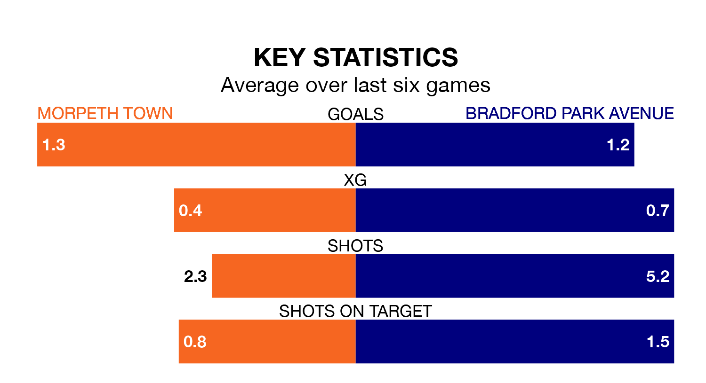

Bradford Park Avenue make the journey to play Morpeth Town on Saturday looking to pick up points to end their three-game losing streak.
Bradford Park Avenue's struggles have left them with just four points from their last six Northern Premier League matches, while their opponents have earned nine from a possible 18.
With 24 goals in 23 games so far this season, Bradford Park Avenue are the league's lowest scorers with 1.0 goals per game. And they are conceding more than average, letting in 42 goals at a rate of 1.8 per game.
Morpeth, meanwhile, are above average scorers, with 1.9 goals per game, compared to a league average of 1.7. They have conceded 1.8 goals per game.
The away side are 20th in the table after 23 games, of which they have won four and drawn five, earning 17 points.
Town are 10 places ahead of Bradford Park Avenue in 10th, with nine wins and seven draws putting them on 34 points.
Morpeth's last match was on December 30, a 2-0 win against Marske United.
Bradford Park Avenue lost 1-0 against Guiseley last time out, on Monday.
Updated: 12:57, 02/01/24